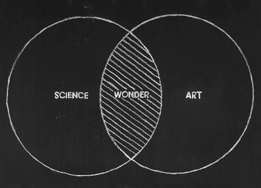

Jiannan Li
I am a 2nd year PhD student at . I devise and build interfaces for people to better make use of computing technology.
I obtained a M.Sc in computer science from University of Calgary, under the supervision of Dr. Ehud Sharlin and Dr. Saul Greenberg. Prior to that, I studied Electronic Engineering at Southeast University, Nanjing, China.
Check out my CV with a focus on research or development.
Send me an email at chrisleeseu AT hotmail.com.

Transparency Degradation and User Action Augmentation on Collaborative Transparent Displays
Through empirical studies, we studied the impact of transparency degradation on users' workspace awareness when using transparent displays. We also evaluated the efficacy of action augmentation techniques in compensating for awareness loss due to transparency degradation.